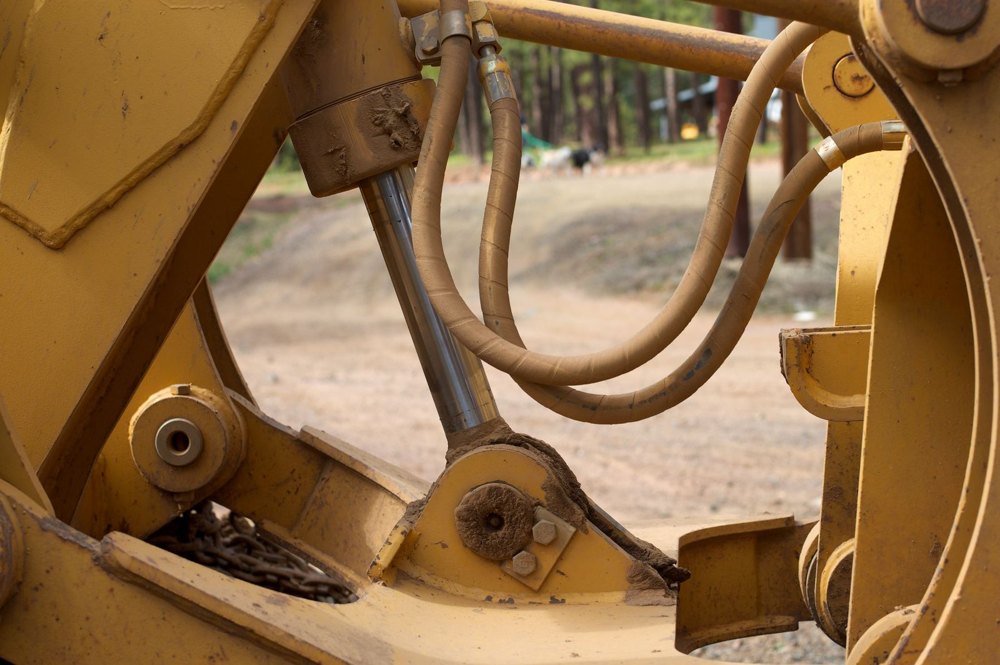

Dirt Work & Site Prep
Clearing, cut and fill, then an engineered pad compacted and tested to the detail your county signs off on.

Statewide Arizona
We clear and grade the lot, put the utilities in the ground, and set your home level. One crew from raw dirt to the day you get keys.
Tell us what the lot looks like and what home is coming. We will tell you what the site needs before we ever quote it.


A manufactured home arrives on a steel frame, moves with the ground, and is inspected against HUD rules rather than framing rules. Set Right Homes is a site work crew, not a general remodeller. We do the three jobs a home needs before anybody turns a key.
Contractors who do this once a year get it wrong in predictable ways. Soft fill under a pier shows up as a stuck door eighteen months later. Anchor spacing comes off the manufacturer's setup manual and your county wind zone, and an inspector checks both.
Manufactured homes sit on ground that has to be built for them. Because of that, general excavation crews unintentionally cause structural problems, failed inspections, or finance issues. Set Right Homes exists to solve those problems.

Clearing, cut and fill, then an engineered pad compacted and tested to the detail your county signs off on.
Water, sewer or septic, power and gas. Trenched, laid, pressure tested and inspected before the home shows up.

Placed, blocked, leveled, anchored and closed up. Singlewide, doublewide or triple, on piers or a permanent foundation.
Cut, fill, compact, test. Get it wrong and it shows up two years later as a door that will not close, and by then the home is on top of it.


Pad was tested and passed the first time. Home landed on a Tuesday and we were level by Thursday.
Dale Whitcomb ”We send them every buyer who needs site work. They call the inspector themselves, which saves my team the chasing.
Renee Ocampo ”Second home they have set for us. Same crew both times, same quote, no change orders halfway through.
Marty Kessel ”West Valley is home base. We run out to the rural lots most crews will not drive to, and the haul is priced up front.

We do. Pad detail goes to the county with the application, we handle corrections, and we call in every inspection. You get the approved card at the end. If you would rather pull them yourself we will hand you the drawings.
On a clean lot with utilities at the road, plan on two to three weeks of field work. Permit review is the variable. Rural lots needing a well, septic and a long power run stretch that out, and we tell you which one is the long pole before you sign.
Yes. Plenty of our jobs are pad only, with the dealer's crew doing the set. We coordinate dates so the pad is finished and tested before the transport shows up.
If a sewer main runs past your frontage you tie in, and that is almost always cheaper. Outside a district you are on septic, which means a percolation test and a county design first. We check both on the walk and price the one you actually need.
A pier set rests on blocks and footings and is tied down with anchors. A permanent foundation is engineered, poured, and the home is fixed to it. FHA, VA and most conventional lenders want the permanent version. Tell us the loan type on day one, because it changes the pad.
Regularly. Wickenburg, Congress, Aguila, Tonopah and down to Casa Grande and Coolidge are normal weeks for us. Anything past that we quote with the haul included so there is no surprise line item.
Parcel number or a cross street is enough to start. We will tell you what the site needs before we ever quote it.